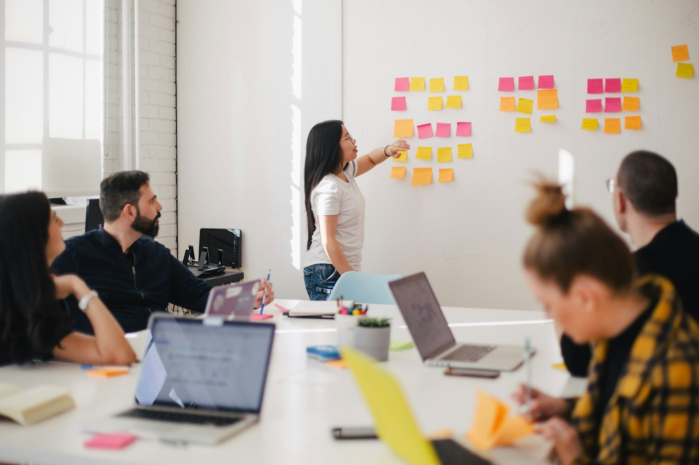

Staff Training
Workshops and training that support knowledge, confidence and educational practice.
Practice-focused learning and professional development for educators, teams, families and communities.
Discuss a Development Goal
AJIS provides staff training and professional development connected to educational practice. Sessions and programmes can be shaped around the needs, experience and goals of the people taking part.
Potential focus areas include inclusive practice, early years learning, literacy, curriculum and learning design, and learner support.
Explore a training enquiry
Development opportunities are explored with AJIS and agreed to suit the intended learners and context.
Workshops and training that support knowledge, confidence and educational practice.
Practice-focused development for educators and teams, with space to reflect and apply learning.
Learning opportunities that connect families, educators and communities around educational support.

Educational programme design can bring content, activities and support into a coherent structure for learners and teams.
View All ServicesShare the learning goals and the context you have in mind.